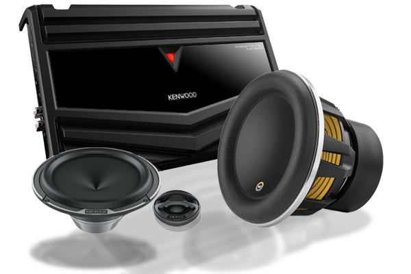
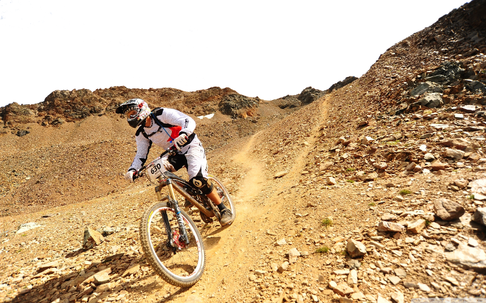

About Me
Hello, my name is Evan Pineo and I have a Bachelors of Business Administration degree in Marketing. While my schooling focused on marketing and social media, I quickly came to take an interest specifically in Search Engine Optimization as well as Web Development.
Interests
Web development became an interest after school as I love technology and the internet which we use all too often every single day. I was amazed at all there is to learn about the online web and how websites are produced through manually created webpages with HTML, CSS, Javascript and much more. I realized I have only just began to touch the surface but wanted to learn much more and dig deeper to increase my understanding.
Yes, the picture in this section is of speakers but another web development graphic would not make this site any more exciting. This brings me to my next interest of car audio and home theater. I am no audiophile but I do appreciate great sound with plenty of bass and clarify for both.

Hobbies
Now we can get to the fun part. When we are not looking to better ourselves and move our careers forward there has to be some kind activity that we engage in to take a break from all the above. For me, this would be the usual watching movies and playing video games but also mountain biking and snowboarding when the weather accommodates.
With my passion for mountain biking, and for the amount that it rains here in Cincinnati, I always knew the trail conditions and previously bookmarked the facebook pages of each trail and coramtb.org to check this but it became a pain to check each individual facebook page and I did not find the cora website to be the greatest experience on mobile. This lead me to create my own page.
